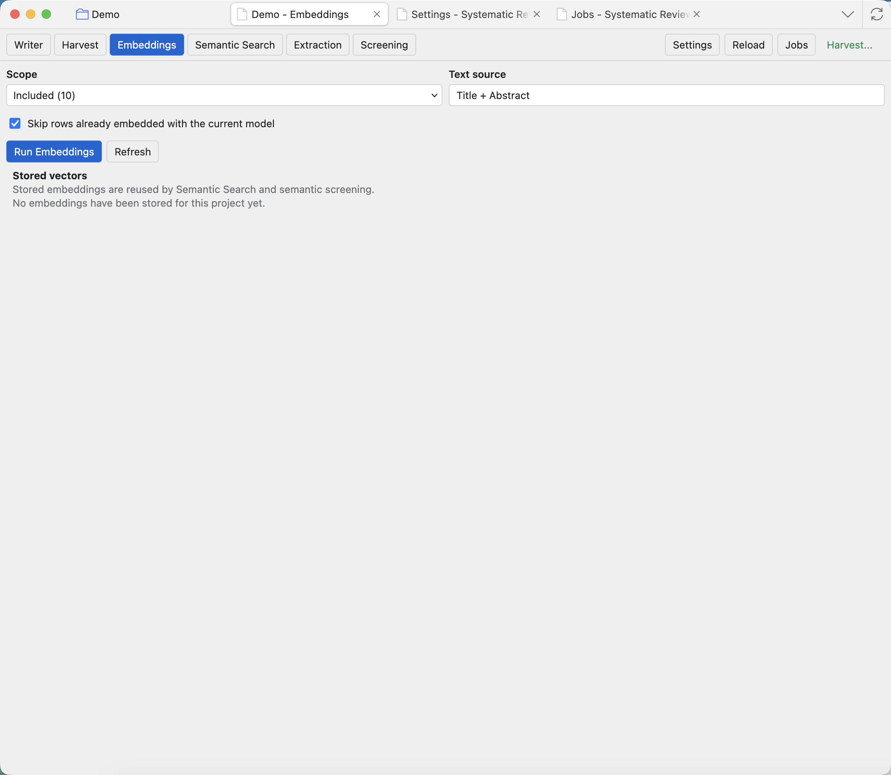

Embeddings
Embeddings turn titles, abstracts, and other text into vectors that semantic search can compare.

Before you run
Configure an Embeddings model in Settings: Runtime and model presets. Embedding models use an embeddings endpoint, not the chat model route. If no embedding model is configured, Semantic Search will not have vectors to compare.
Controls
Scope
Choose which project records to embed, such as Pending or Included. Use smaller scopes for testing and larger scopes when the settings are confirmed.
Text source
Choose the text that becomes the embedding input. Title and abstract is the usual first choice for screening-stage search.
Skip rows with existing vectors
Leave this on when you only want missing vectors. Turn it off when you intentionally want to regenerate vectors after changing model or text source.
Run Embeddings
Queues an embeddings job. Large scopes can take time, so progress is shown in Jobs.
Refresh
Reloads the stored vector summary after jobs finish or after another workflow adds records.
Stored vectors
Shows what embedding sets already exist for the project and how many rows are covered.
What happens next
When the job finishes, Semantic Search can score records against a query. If records are added later, run embeddings again for the missing rows. If you change embedding models, regenerate vectors for the relevant source so scores are comparable.
If Semantic Search says no embeddings are available, check Settings first, then Jobs for a failed or still-running embeddings job.